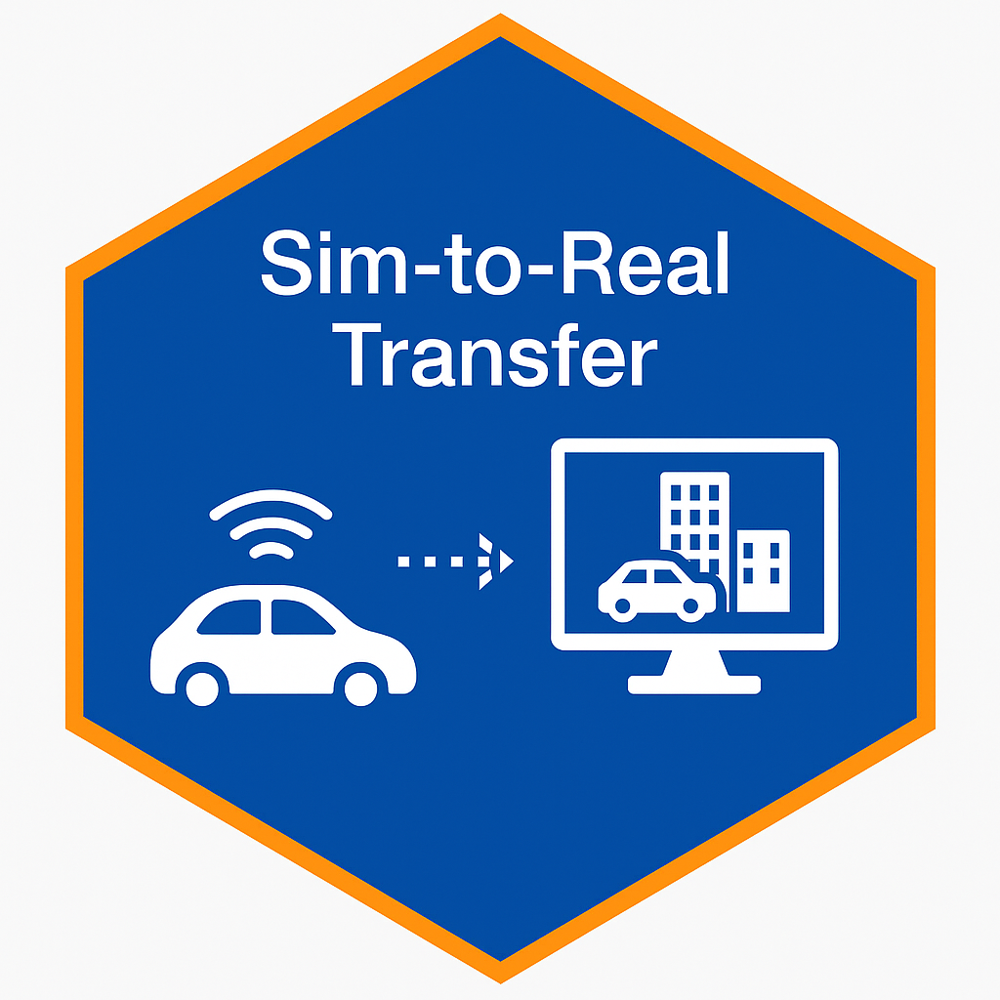
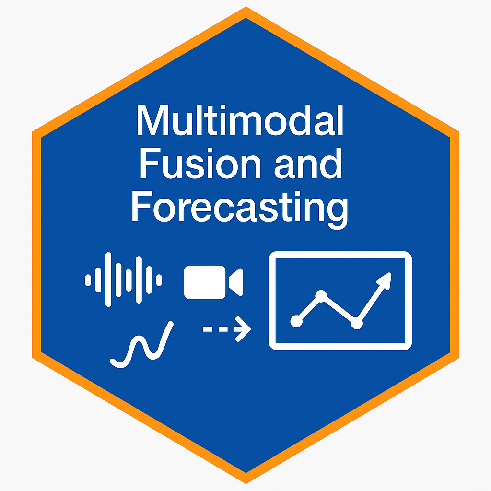

Research
I develop safe, interpretable, and adaptive AI systems for real-world cyber-physical environments that must operate under uncertainty, strict physical constraints, and adversarial conditions. My work sits at the intersection of machine learning, control theory, optimization, and AI safety, with a core focus on building models that are robust, predictable, and deployable at scale.
Vision
I aim to create AI agents that generalize across environments, learn from imperfect or unreliable data, and remain stable under distribution shifts. These capabilities are essential both for scientific progress and for building production-grade intelligent systems used in industry.
My research centers around five pillars:
- Safe & Trustworthy Reinforcement Learning: Designing agents that remain reliable under sensor noise, hardware faults, non-stationarity, and adversarial perturbations. This includes constraint-aware learning, certified robustness, and safe exploration in safety-critical settings.
- Physics-informed Deep Reinforcement Learning (DRL): Embedding physical laws, invariants, and feasibility constraints directly into model architectures and learning objectives to improve convergence, interpretability, and real-world deployability.
- Probabilistic & Bayesian Modeling: Quantifying epistemic and aleatoric uncertainty for risk-aware planning in partially observable, high-stakes environments using Bayesian neural networks, uncertainty-aware RL, and probabilistic inference.
- Large Language Models (LLMs) for autonomous reasoning: Leveraging LLMs to support high-level planning, explainable decision pipelines, natural-language supervision, and adaptive control. This enables human-AI collaboration and interpretable reasoning in complex systems.
- Vision-based simulation environments: Using platforms such as CARLA, CityLearn, AirSim, and OpenDSS to train agents in multimodal, visually rich environments, supporting robust perception-control integration and sim-to-real transfer.
Mission
By integrating physics-guided structure, probabilistic reasoning, and safe reinforcement learning, my mission is to build the next generation of AI systems that are:
- Reliable, even under uncertainty, noise, and adversarial conditions
- Generalizable across tasks, scales, and distribution shifts
- Interpretable to operators, engineers, and decision-makers
- Deployable in large-scale, real-world cyber-physical environments
My research advances the foundation needed to deploy trustworthy AI across critical infrastructures, autonomous systems, and safety-critical infrastructure domains where reliability and robustness are essential for real-world impact.
Research Focus
These focus areas organize my ongoing and recent projects that bridge fundamental methods and deployable systems.
Design control agents for voltage regulation and reactive power optimization in smart distribution grids.
 Physics-Informed Actor-Critic
Physics-Informed Actor-CriticEmbed grid physics and control limits directly into the DRL learning loop for stable and efficient decisions.  Sim-to-Real Transfer
Train agents in simulated OpenDSS environments and deploy them on real-time OPAL-RT setups.
Develop agents that ensure system safety, robustness, and interpretability under uncertainty.
 Uncertainty-Aware Policies
Uncertainty-Aware PoliciesQuantify epistemic and aleatoric uncertainty in high-stakes, partially observable settings.
Enable agents to generalize across grids with different topologies, dynamics, and loads.
 Meta-RL for Efficiency
Meta-RL for EfficiencyLeverage meta-reasoning to accelerate learning in low-data, high-variance scenarios.
 Perception-Control Fusion
Perception-Control FusionUse CARLA and AirSim to train end-to-end systems in visual RL tasks with sensors.  Multi-modal Representations
Combine visual, state, and contextual features for better decision-making.
 LLM-Guided Control
LLM-Guided ControlPublications
Journal Papers Total: 2
-
Arif Hussian, , Gelli Ravikumar
Bayesian-optimized bidirectional long-short-term memory network for wind power forecasting with uncertainty quantification , Electric Power Systems Research, 2026
Paper Code ️Poster -
, Gelli Ravikumar
Physics-based Deep Reinforcement Learning for Grid-Resilient Volt-VAR Control (Under Review), IEEE Transactions on Smart Grid, 2025
Paper Code Poster
Conference Papers Total: 7
-
, Gelli Ravikumar
A Multi-Objective Optimization Framework for Carbon-Aware Smart Energy Management , IEEE North American Power Symposium (NAPS), 2025
Paper Presentation -
, Kumar Utkarsh, Wang Jiyu, Padullaparti Harsha
Advanced Semi-Supervised Learning With Uncertainty Estimation for Phase Identification in Distribution Systems , IEEE PES General Meeting, 2025
Paper Presentation Poster -
, Gelli Ravikumar
Transfer Learning Enhanced Deep Reinforcement Learning for Volt-Var Control in Smart Grids , IEEE PES Grid Edge Technologies Conference & Exposition, 2025
Paper Poster
Ongoing Projects
Federated DRL for Cyber-Resilient Volt-VAR Optimization
Decentralized, communication-efficient control using LSTM-enhanced PPO agents across distributed DERs.One-Shot Policy Transfer with Physics Priors
Train agents on small topologies and adapt to IEEE 123-bus, 8500-node networks in a few iterations.LLM-Guided Autonomous Planning for Smart Buildings
Convert user prompts to interpretable control policies using LLMs (OpenAI, Claude) in CityLearn environments.